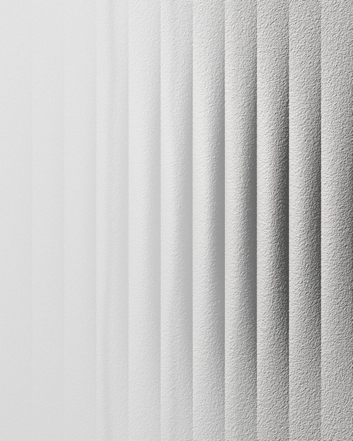

Every product a readymade
First the hand, then the choice.



Abstract
Who makes a product when the idea is all that reaches the buyer? Every new tool has split the idea from the hand, and each split has brought the same panic. Plato warned that writing would weaken memory and scorned the Sophists, who sold the art of persuasion for a fee; in 1492 the abbot Trithemius defended hand copying against print, in a book he then had printed; the Luddites broke the power looms. Each time the making moved, to the press, the mill, the camera, someone panicked, someone sold the new tool and was hated for it, and the same questions stayed: why still make, why a large production and not one person, why copy. Art answered first. Duchamp's Fountain (1917) made a factory urinal a work by choosing it; Sol LeWitt wrote that "the idea becomes a machine that makes the art" (1967); Andy Warhol called good business the best art. Art had its hated sellers too. Thomas Kinkade sold his paintings as prints through his own mall galleries, a company on the stock exchange and home shopping television, and critics called it kitsch; Jeff Koons gave a notecard photograph to artisans to copy "as per photo," and lost in court (1992). Fashion met the same split when production moved offshore, and two cities answered in opposite ways. Antwerp let the making go and sold the design, with help from Belgium's 1981 Textile Plan, while Paris kept the making and tied haute couture to a local atelier. Rei Kawakubo and Martin Margiela put the idea in the garment itself, and Margiela's Replica line (1994) labeled each copy with its origin and date. The market took the method, and the old charge came with it: critics said Virgil Abloh repackaged more than he created, and Supreme sold a brick with its logo on it (2016). Today most products are readymades: designed in one place, made in another, bought for the idea. Now the choosing goes too. Feeds, defaults and generated options arrive already ranked, and choice, the value behind both the vote and the purchase, passes to the tool. Duchamp met this before. From 1923 he let the world believe he had left art for chess, a game made only of choices; in secret, from 1946 to 1966, he built Étant donnés by hand. Chess met it too. A computer beat the world champion in 1997, and people kept playing, now with the engine as their coach. This theme reads the panic as old and follows the handoff from the hand to the choice: when the tool chooses, what remains is the making people do for its own sake.
Impact: Direction
A tool can only choose from what has been recorded. Much of what people feel about a thing never is: a fleeting sense, a fading memory, the familiar object that is ordinary and still anchors a day, feelings shared in passing, kept secret or forgotten. The record is wider than it was. Before social media, most writing came from the victors, the state or the well placed; now more people write, but the record still holds what gets posted, not what gets felt. Feeling comes two ways, natural and planned: the rock in a riverbed and the soft pillow. Neither is better, and either can be presented by someone; a stone set on a stand is already a readymade. Before the museum sorted nature from art, the cabinet of curiosities set a riverbed stone beside a carved cup and ordered both by wonder; the feed is a new cabinet, ordered by the engine instead of by a person. No product or artwork controls how people feel, and no measure catches it in the wild: a brain reading takes the person out of life, threads catch only what is said, and a natural thing presented for testing is no longer natural. So the tool coaches and the hand decides. Generated options and data narrow the field; the maker then chooses, by living with the material, whether to plan the feeling or to leave room for the one that is found, and keeps a cabinet of their own, ordered by what was felt.
Overall mood
The garment as an idea in cloth. Bows knotted into a body, a jacket stitched with its own marking threads, a tailor's dummy left in view, lace printed on silk, a signed urinal on a plinth. White rooms, mannequins, no faces; the thing is shown as a proposition, and the label is the question.

Test
A photo cannot show intention or authorship; it can only show the proposition. Intention stays unproven by any image here.
Motifs
01 The body redrawn. From "Kawakubo": cloth as sculpture that changes the body's outline. Images (01), (02). Fit: strong.
02 Construction shown as the idea. From "Margiela" and "authorship": basting stitches left in, stitches outside the seam, the tailor's dummy in view. Images (03), (04), (05). Fit: strong for (03), (04); (05) is a plain coat on a dummy, moderate (see tagging).
03 The garment quotes a garment. From "brand as apparatus": a dress that prints another dress. Image (06). Fit: weak, one image only.
04 The signature makes it art. From "authorship" and the test (does the idea survive without the label): a signed readymade where signature and plinth carry the proposition. Image (07). Fit: weak as fashion; it is the art-side anchor, not a garment.
Weak motifs: 03 and 04 have one image each. No motif yet covers "brand as apparatus" directly (label, logo, store, edition); the blank white label of Margiela was not found as a cleared image.
Against
The look carried by the label alone: logo as content, a garment with no proposition behind it. Open item.
Color direction
The measured palette below is what these particular museum photos happen to show (white galleries, black and gray cloth); it describes the board, not a rule for T2.